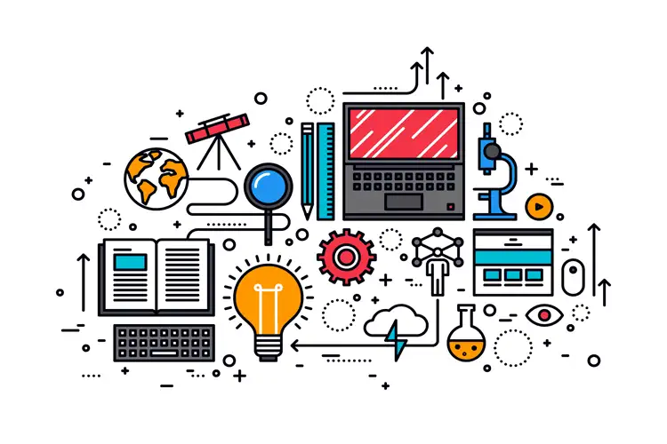

By Vishnu P M
As an MBA student, I constantly observe real businesses around me to understand how strategy, operations, and decision-making work in the real world. One such example comes from my own relatives, who run a bakery business in Chennai. Their experience clearly shows how manual processes can limit growth, and how technology can completely transform a business. My relatives started their bakery with one outlet, and after building a decent customer base, they attempted to expand by opening a second branch. However, the expansion did not achieve the success they expected. The core reason was that their operations were still heavily dependent on manual processes. Every task—from dough preparation to baking to even slicing the bread—was done manually. This slowed down production, reduced consistency, and increased dependence on labour. Even their billing, accounting, and stock management were handled manually, which created errors, confusion, and delays. Without proper systems, they struggled to track daily sales, manage expenses, monitor inventory, or maintain quality across outlets. Because the owners were busy managing manual work and day-to-day problems, they did not have enough time or clarity to focus on long-term strategies. When business owners remain stuck inside the operations, they cannot plan expansion, think creatively, or make data-driven decisions. This is where technology becomes essential, especially in today’s competitive era. If the bakery had adopted modern technology, the entire workflow could have changed. Machines like automated dough mixers, digital proofers, bread slices, and temperature-controlled ovens can increase production speed dramatically. Tasks that take hours manually can be completed within minutes using machines, ensuring fast output and consistent quality. Similarly, adopting digital tools like POS billing systems, accounting software, and inventory management apps can bring accuracy and transparency. Owners can instantly see sales reports, track stock levels, understand customer demand, and identify which products perform best. Technology not only improves efficiency but also reduces errors, lowers labour dependency, and ensures that every outlet performs consistently. Most importantly, it frees up the owner’s time from routine work, allowing them to focus on strategy, innovation, marketing, and expansion—the key pillars of business growth. This real-life case clearly shows that in the current era; technology is not just helpful but necessary. A business that relies only on manual work may survive, but a business that adopts technology can scale, grow, and compete effectively. For any small or medium business hoping to expand, systemisation and technology adoption are the first steps toward sustainable success.
← Back to Blogs